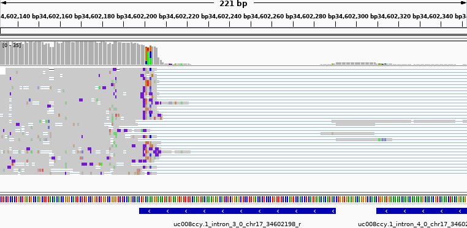
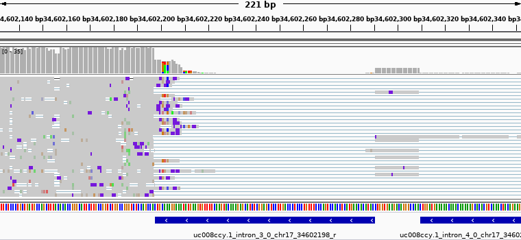
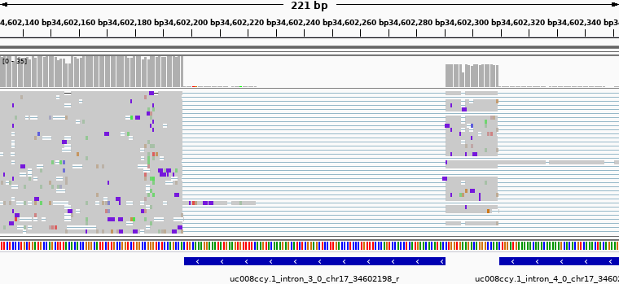

Reference & annotations based
mRNA splicing
An extension to minimap2's alignment algorithm
Maël Kerbiriou @ BONSAI
Minimap2
- While minimap1 was initally a mapper, looking for colinear chains of anchors (minimizers), ⇒ Only reports positions, not the base-level alignements
- minimap2 augments the mapping by performing alignments for each region between mapped anchors.
Gapped alignment scoring
Needleman–Wunsch algorithm finds the best scoring alignement.
Scoring function take into account:
- Matchs/mismatchs
- gaps: deletion/insertion.
- initial cost: $O$
- elongation cost: $l \cdot E$
Gapped alignment scoring
2-pieces affine score
-x splice -un$$\begin{align*} \textrm{gap_penalty} & =\min\left(\begin{array}{cc} O_{1}+l \cdot E_{1}, & \textrm{(deletion)}\\ O_{2} & \textrm{(intron)} \end{array}\right) \end{align*}$$ Not the default splicing mode in minimap !
Naive splice mode
-x splice -un Dataset 3, chr17:34,602,132-34,602,354
Spliceosomal consensus sequences
Looking at the 3 bases flanking the introns
Flanking sequences frequencies
Donor sequences in RefSeq's introns, compared to those found with naive splice mode
-x splice -un
Flanking sequences frequencies
Acceptors sequences in RefSeq's introns, compared to those found with naive splice mode
-x splice -un
Splice patterns detection
-x splice
2-pieces affine score
with splice patterns detection
-x splice$$\begin{align*} \textrm{gap_penalty} & =\min\left(\begin{array}{cc} O_{1}+l \cdot E_{1}, & \textrm{(deletion)}\\ O_{2}+O_{\textrm{open}}+O_{\textrm{close}} & \textrm{(intron)} \end{array}\right)\\ O_{\textrm{open}} & =\begin{cases} 0 & \mathit{if}\textrm{ GT[AG] (fw) }\mathit{or}\textrm{ CT[AG] (rev)}\\ C/2 & \mathit{if}\textrm{ GT[CT] (fw) }\mathit{or}\textrm{ CT[CT] (rev)}\\ C & \mathit{otherwise} \end{cases}\\ O_{\textrm{close}} & =\begin{cases} 0 & \mathit{if}\textrm{ [CT]AG (fw) }\mathit{or}\textrm{ [CT]AC (rev)}\\ C/2 & \mathit{if}\textrm{ [AG]AG (fw) }\mathit{or}\textrm{ [AG]AC (rev)}\\ C & \mathit{otherwise} \end{cases} \end{align*}$$
Splice mode
-x splice Dataset 3, chr17:34,602,132-34,602,354
Naive splice mode
-x splice -unDataset 3, chr17:34,602,132-34,602,354
Flanking sequences frequencies
Donor sequences of introns found with splice mode
-x splice
Flanking sequences frequencies
Acceptor sequences of introns found with splice mode
-x splice
2-pieces affine score
with patterns & annotations
-x splice -u introns.bed$$\begin{align*} \textrm{gap_penalty} & =\min\left(\begin{array}{cc} O_{1}+l \cdot E_{1}, & \textrm{(deletion)}\\ O_{2}+O_{\textrm{open}}+O_{\textrm{close}} & \textrm{(intron)} \end{array}\right)\\ O_{\textrm{open}} & =\begin{cases} -C/2 & \mathit{if} \in \textrm{ref}_\textrm{open}\\ 0 & \mathit{if}\textrm{ GT[AG] (fw) }\mathit{or}\textrm{ CT[AG] (rev)}\\ C/2 & \mathit{if}\textrm{ GT[CT] (fw) }\mathit{or}\textrm{ CT[CT] (rev)}\\ C & \mathit{otherwise} \end{cases}\\ O_{\textrm{close}} & =\begin{cases} -C/2 & \mathit{if} \in \textrm{ref}_\textrm{close}\\ 0 & \mathit{if}\textrm{ [CT]AG (fw) }\mathit{or}\textrm{ [CT]AC (rev)}\\ C/2 & \mathit{if}\textrm{ [AG]AG (fw) }\mathit{or}\textrm{ [AG]AC (rev)}\\ C & \mathit{otherwise} \end{cases} \end{align*}$$
Splice mode with annotations
-x splice -u introns.bed Dataset 3, chr17:34,602,132-34,602,354
Splice mode
-x spliceDataset 3, chr17:34,602,132-34,602,354
Naive splice mode
-x splice -unDataset 3, chr17:34,602,132-34,602,354
Flanking sequences frequencies
Donor sequences of introns found with annotations
-x splice -u introns.bed
Flanking sequences frequencies
Donor sequences of introns found with annotations
-x splice -u introns.bed
Other metrics
Support
Other metrics
Support
(cumulative) Histogram of introns with support $\geq c$
Other metrics
Distances between splicing sites
Other metrics
Distances between splicing sites
Implementation details
Two input formats for annotations:
- BED: intron intervals (0-based, $[s, e)$)
- TSV: unpaired splicing sites
chr10 10741603 L
- 'L'eft: last base of previous exon
- 'R'ight: last base of the intron
sequence : X X X G T A G X X
intron/exon: e e e i i i i e e
coordinates: 0 1 2 3 4 i 5 6 7
TSV: . . L . . . R . .
BED: . . . [ . . . ) .
Implementation details
- https://github.com/Piezoid/minimap2
Will also release the analysis notebook. - Pull request:
+199
−26
H.Li interested by the idea but not the implementation - Some contorsions for passing the annotations down to the SSE routines (tagging the reference sequence)
- Hybrid mode: Had to mask annotations on the opposite strand while infering the transcript orientation
Perspectives
@ UCSC, used by RE Workman et al.FLAIR

Perspectives
What we missed: “In the presence of noise, confidence from $N$ observations is proportional to $\sqrt{N}$”
- Responsibility problem: Corrector ? Aligner ? Isoforms clustering ?
- Isoforms inference as a global optimization problem. eg. $\sum_{\textrm{exons}\in\textrm{reads}\in\textrm{isoforms}}\textrm{Score$GA of exons as a scoring function
for isoforms inference (incl. clustering) - Heterogeneous data points: LR cDNA ? SR RNAseq ? (partial) reference sequences ? (partial) gene models ? etc...